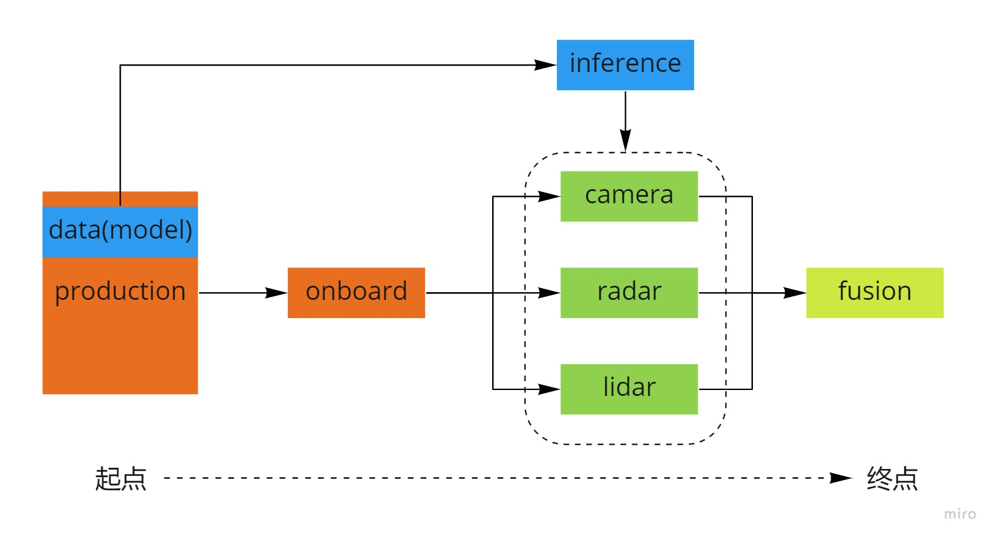

Dig into Apollo - Perception  ¶
¶
温故而知新，可以为师矣
Table of Contents¶
CNN
什么是CNN？
CNN的原理
卷积层(Convolutional Layer)
池化层(Max Pooling Layer)
全连接层(Fully Connected Layer)
如何构建CNN
基本概念
引用
Caffe2
Caffe2环境准备
安装显卡驱动
安装CUDA
选择CUDA版本
安装CUDA
设置环境变量
检验安装
安装cuDNN
安装Caffe2
参考
Perception模块简介
production目录
onboard目录
radar子模块
camera子模块
lidar子模块
fusion子模块
inference推理子模块
Reference
Perception模块简介¶
首先简单看下perception的目录结构：
.
├── BUILD
├── Perception_README_3_5.md
├── README.md
├── base // 基础类
├── camera // 相机相关 --- 子模块流程
├── common // 公共目录
├── data // 相机的内参和外参
├── fusion // 传感器融合
├── inference // 深度学习推理模块
├── lib // 一些基础的库，包括线程、时间等
├── lidar // 激光雷达相关 --- 子模块流程
├── map // 地图
├── model // 深度学习模型
├── onboard // 各个子模块的入口 --- 子模块入口
├── production // 感知模块入口（深度学习模型也存放在这里）--- 通过cyber启动子模块
├── proto // 数据格式，protobuf
├── radar // 毫米波 --- 子模块流程
├── testdata // 上述几个模块的测试数据
└── tool // 离线测试工具
下面介绍几个重要的目录结构:
production目录 - 感知模块的入口在production目录，通过lanuch加载对应的dag，启动感知模块，感知模块包括多个子模块，在onboard目录中定义。
onboard目录 - 定义了多个子模块，分别用来处理不同的传感器信息（Lidar,Radar,Camera）。各个子模块的入口在onboard目录中，每个传感器的流程大概相似，可以分为预处理，物体识别，感兴趣区域过滤以及追踪。
inference目录 - 深度学习推理模块，我们知道深度学习模型训练好了之后需要部署，而推理则是深度学习部署的过程，实际上部署的过程会对模型做加速，主要实现了caffe，TensorRT和paddlepaddle3种模型部署。训练好的深度模型放在”modules\perception\production\data”目录中，然后通过推理模块进行加载部署和在线计算。
camera目录 - 主要实现车道线识别，红绿灯检测，以及障碍物识别和追踪。
radar目录 - 主要实现障碍物识别和追踪（由于毫米波雷达上报的就是障碍物信息，这里主要是对障碍物做追踪）。
lidar目录 - 主要实现障碍物识别和追踪（对点云做分割，分类，识别等）。
fusion目录 - 对上述传感器的感知结果做融合。
整个模块的流程如图：

可以看到感知模块由production模块开始，由fusion模块结束。
production目录¶
production中主要是存放：
配置和lanuch和dag启动文件
存放训练好的模型
.
├── conf // 配置文件
├── dag // dag启动文件
├── data // 训练好的模型
└── launch // cyber launch加载dag
该文件中有多个lanuch文件，同时一个lanuch文件中包含多个dag文件，也就是说一个lanuch文件会启动多个子模块。
onboard目录¶
onboard目录定义了多个子模块，每个子模块对应一个功能，包括：车道线识别，障碍物识别，红绿灯识别，传感器融合，场景分割等。
.
├── common_flags
├── component // 子模块入口
├── inner_component_messages
├── msg_buffer
├── msg_serializer
├── proto
└── transform_wrapper
实际上几个子模块可能合并为一个模块，如何确定模块是否合并呢？我们可以查看”onboard/component”目录中的BUILD文件。
name = "perception_component_inner_lidar",
srcs = [
"fusion_component.cc",
"lidar_output_component.cc",
"radar_detection_component.cc",
"recognition_component.cc",
"segmentation_component.cc",
"detection_component.cc",
],
在BUILD文件中上述几个模块被编译为一个模块”libperception_component_lidar”。也就是说在dag中实际上只需要启动libperception_component_lidar这一个模块就相当于启动了上述几个模块。
看完了perception模块的入口，以及各个子模块的定义，那么各个子模块的功能如何实现的呢？ 实际上感知各个子模块的功能是通过lidar,radar和camera3种传感器实现的，每种传感器分别都执行了目标识别和追踪的任务，最后通过fusion对传感器的数据做融合，执行代码分别在”perception/radar”,”perception/lidar”,”perception/camera”目录中。这里有2种查看代码的方式，一种是正序的方式，根据具体的功能，例如从物体识别子模块入手，分别查看lidar,radar和camera模块中的物体识别功能，另一种是倒序的方式，根据传感器划分，先查看传感器分别实现了哪些功能，然后回过头来看各个子模块是如何把上述功能整合起来的。这里我们采用第2种方式，先看各个传感器的执行流程如下图。

从图中可以看到，每个传感器都实现了物体识别的功能，而摄像头还实现了车道线识别和红绿灯检测的功能，每个传感器执行的任务流水线也大概相似，先进行预处理，然后做识别，最后过滤并且追踪目标。其中物体识别用到了推理引擎inference。
接下来来我们分别查看各个传感器的具体实现。我们先从radar开始看起，主要是radar模块相对比较简单。